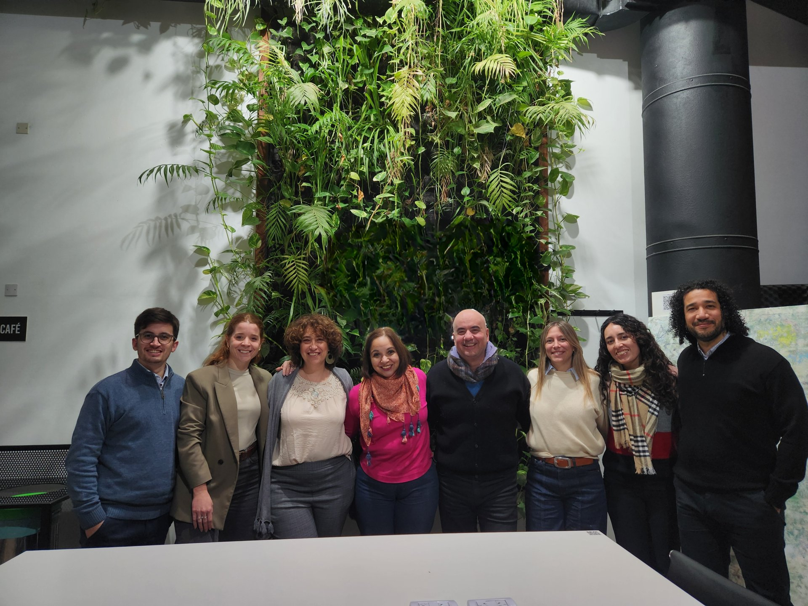
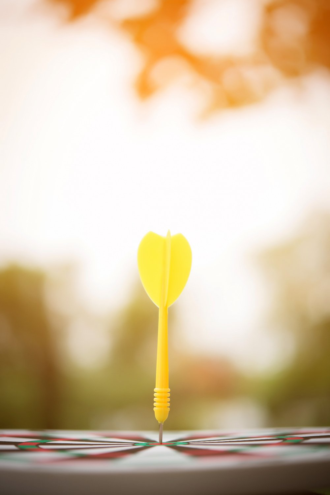
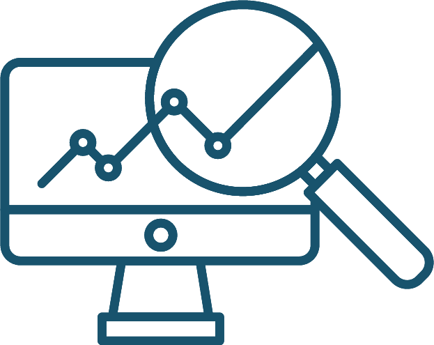
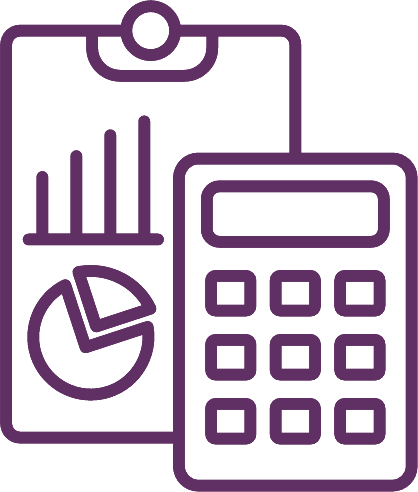
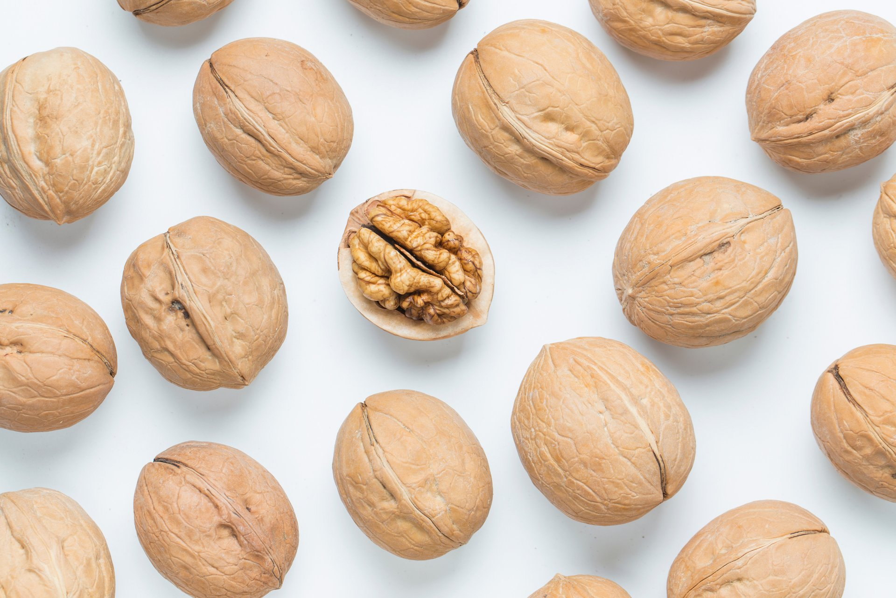
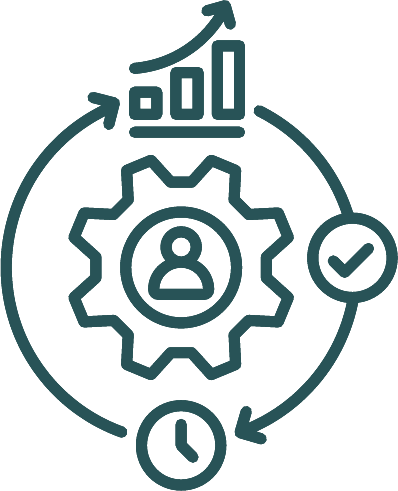
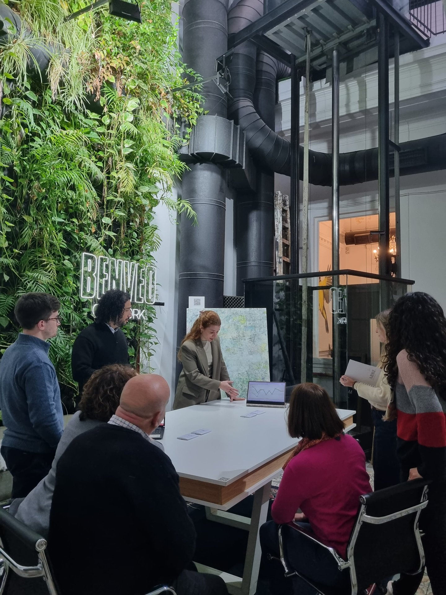
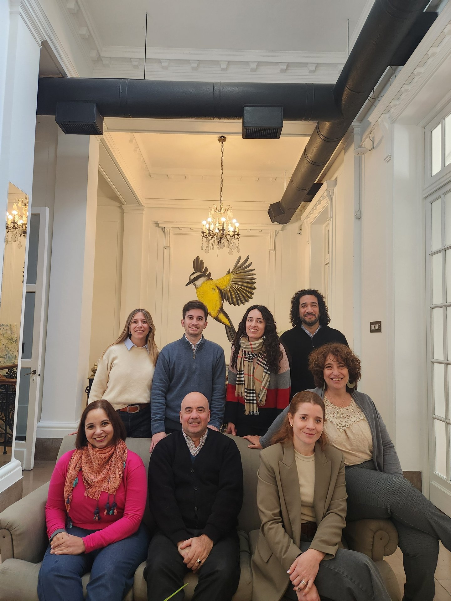

Animáte a pensar
en grande.

Quiénes somos
Somos una consultora orientada a impulsar a las entidades a un estadío más elevado en su desempeño. Desde 2018 acompañamos a empresarios y directivos.
Profesionales con mirada objetiva y amplia experiencia en gestión contable, empresarial y auditoría, para construir resultados sostenibles y duraderos.
Nuestros servicios
Cuatro servicios especializados que profesionalizan la gestión y potencian el crecimiento.
especializada
dirección
gestión contable
de procesos
Auditoría
especializada
La opinión de un profesional independiente brinda solidez, confianza y transparencia.


Tablero de
dirección
Conocé el desempeño de tu negocio, evaluá objetivos y tomá decisiones con un análisis profesional e independiente.

Integración de
gestión contable
Asumimos el rol del área contable: la contabilidad transforma datos en decisiones al servicio de la Dirección.


Optimización
de procesos
Evaluamos los procesos administrativos en búsqueda de eficiencia: riesgos, controles y tecnología.

Beneficios
Visión estratégica, procesos claros y acompañamiento cercano.
Claridad y control
Reportes claros e información confiable.
Procesos ordenados
Eficiencia y menos riesgos.
Visión estratégica
Mirar más allá del día a día.
Acompañamiento
Un equipo experto integrado a tu empresa.
Nuestra
metodología
Somos socios estratégicos que se sumergen en la realidad de cada empresa.
Diagnóstico
Análisis profundo de la situación actual.
Personalización
Soluciones a medida de cada empresario.
Implementación
Nos integramos al día a día operativo.
Acompañamiento
Seguimiento permanente y ajustes.
Evaluación y mejora
Medición de resultados y optimización continua.

Nuestro diferencial radica en construir relaciones de confianza duraderas.